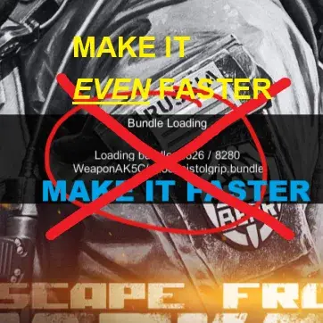

LoadBundleEvenFaster
- Downloads
- 8,258
- Favourites
- 19
- Mod lists
- 92
- “Sick of staring at the ‘Bundle Loading’ screen? Is ‘fast’ simply not fast enough for you?
- Or are you simply not satisfied unless loading speeds are instant? This mod aims to speed up the loading phase when connecting to a remote SPT server.“
(Gif speed up to 10x)
(The right one is without any Loading tweak mod – without this mod AND crc32 patch)
THIS MOD ONLY WORKS WHEN YOU ALREADY DOWNLOADED ALL BUNDLE FILE ON YOUR SYSTEM (Started the game and reached the menu at least once)
or you could use BundleArchiver from Lacyway
While this mod works as a standalone plugin, it is HIGHLY RECOMMENDED to install it alongside my other mod:
This mod is specifically designed for: Remote / Headless Server Users. + Installed WTT-Armory/WTT-ContentBackport (Or any bundle-heavy mod)
- tldr: if u feel the “Loading Bundle” on client startup or [Info :BundleManager] CACHE: Loading locally [SomeBundle].bundle on headless startup is taking too much time
Just like the Crc32 Patch, this mod targets the file verification bottleneck that only occurs when connecting to a remote server.
- Remote/Network Connection (Any IP other than 127.0.0.1): YES. If you connect to a server on a different PC, SPT forces a file integrity check. This mod turns that slow check into a multi-threaded sprint. You need this.
- Localhost (Single PC): NO. If you play and host on the same machine, SPT skips verification entirely. This mod will have no effect.
A Note on System Responsiveness
“My game froze for a few seconds (for me it’s around 1s) on the loading screen!”
This is NORMAL. Do not panic.
Installation
- Download the release file from the Versions tab.
- Extract the contents into your SPT root directory (where
BepInExis located). - (Optional but Highly Recommended) Install LoadBundleFaster (Crc32 Patch) for the native hardware acceleration.
Parallel Pre-Validation (The Speedup): Stock SPT verifies bundles serially (one-by-one) on a single thread. This mod decouples the verification process and parallelizes it across all available CPU cores. By pre-calculating checksums in parallel, it saturates your disk I/O and CPU, turning a sequential bottleneck into an instant burst operation.
Integrity Guaranteed (The Safety Net): Speed means nothing without accuracy. If the parallel check detects ANY anomaly (missing files, hash mismatch, or corruption), the mod immediately aborts the fast path and falls back to the original SPT behavior. This ensures that SPT can correctly identify and re-download broken files, guaranteeing 100% game file integrity.
Version
1.0.0
- initial release